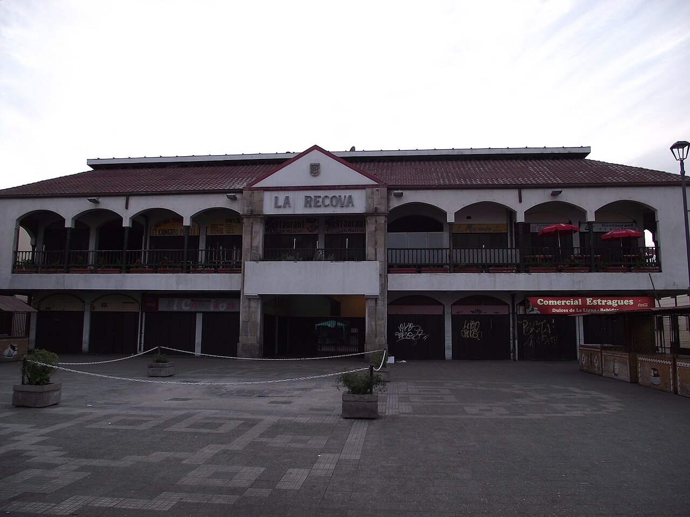
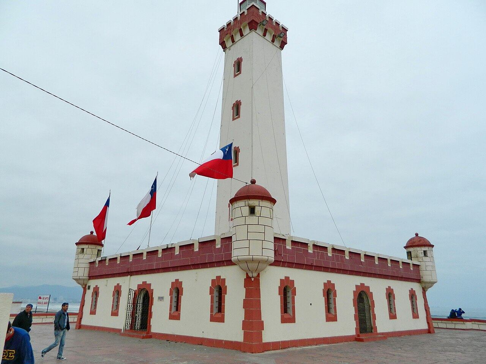

Ingresa tu correo institucional registrado para recibir un código de verificación.
Emblema histórico y costero de la ciudad fundada en 1544.
Corazón histórico, arquitectura colonial y áreas verdes comunales.

Tradición artesanal, papaya serenense e identidad de la Región.
Conexión territorial entre el Océano Pacífico y el Valle de Elqui.

Servicio y cercanía para los vecinos de las 6 delegaciones.